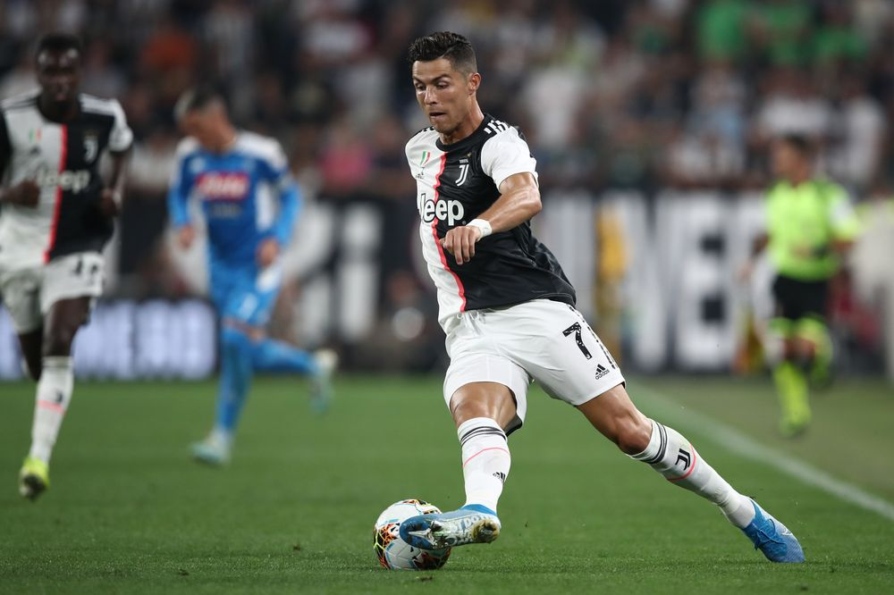

Lionel Messi
He was born in Argentina but grew up in Spain. He is regarded as one of the best players currently.He players for FC Barcelona and his home country, Argentina's, national team. He has a prolific goal scoring record. He is also extremely composed with the ball and is extremely good at leaving opponents in their tracks. His shooting skills are one of the best in the leauge and many rising soccer players look up to him for inspiration.

Ronaldo
He is a professional Portuguese soccer player who now playsfor Juventus and used to play for Real Madrid. People consider him to be the rival of Messi because of his immense amount of skills and speed. He also became the world's most expensive player when he was signed to Real Madrd for 94 million Euros. He as broken several scoring records and has recieved the Ballon d'Or five times. People say that it looks like he is dancing when he uses his skills!
Neymar Jr.
Neymar is a professional Brazilian soccer player who currently plays for Paris Saint-Germain and the Brazilian National Team. He was noticed at a young age and foined FC Santos. People started to talk about him and he soon joined FC Barcelona. He has helped the Brazilian national team reach the semi final of the World Cup and is known to be one of the leading footballers of his age.He's also my personal favorite!